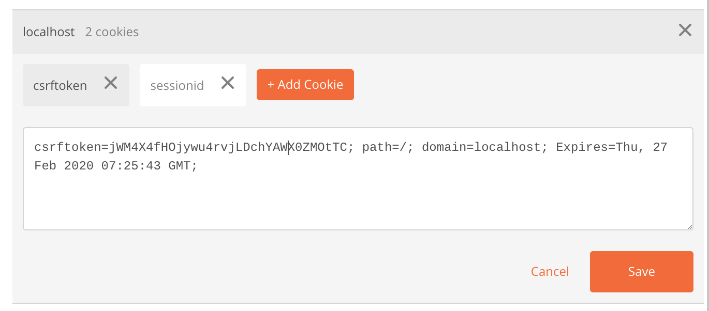
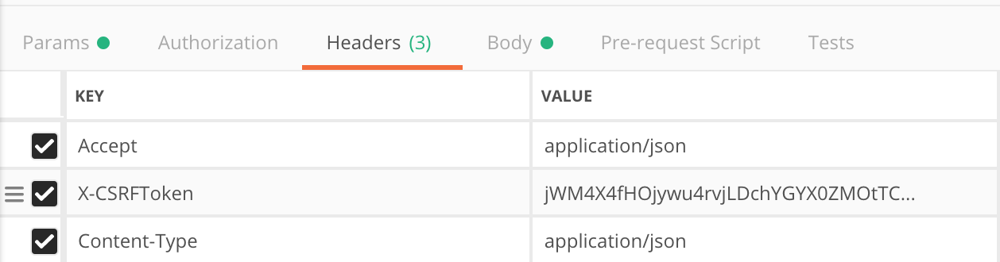
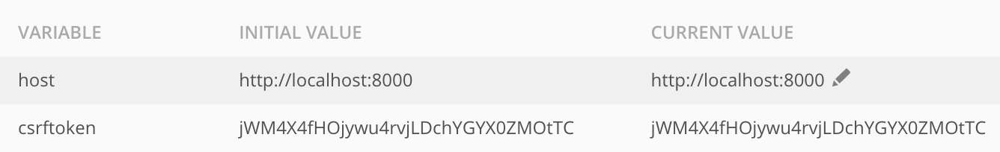
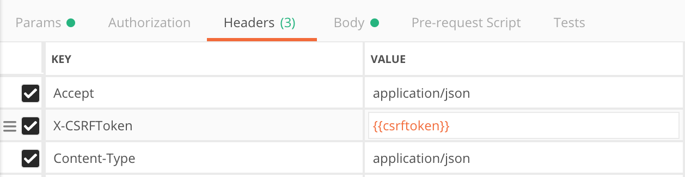

Django Tips & Tricks #12 - Automatically Set CSRF Token in Postman
Introduction
Django has inbuilt CSRF protection mechanism for requests via unsafe methods to prevent Cross Site Request Forgeries. When CSRF protection is enabled on AJAX POST methods, X-CSRFToken header should be sent in the request.
Postman is one of the widely used tool for testing APIs. In this article, we will see how to set csrf token and update it automatically in Postman.
CSRF Token In Postman
Django sets csrftoken cookie on login. After logging in, we can see the csrf token from cookies in the Postman.

We can grab this token and set it in headers manually.

But this token has to be manually changed when it expires. This process becomes tedious to do it on an expiration basis.
Instead, we can use Postman scripting feature to extract token from cookie and set it to an environment variable. In Test section of postman, add these lines.
var xsrfCookie = postman.getResponseCookie("csrftoken"); postman.setEnvironmentVariable('csrftoken', xsrfCookie.value);
This extracts csrf token and sets it to an environment variable called csrftoken in the current environment.

Now in our requests, we can use this variable to set the header.

When the token expires, we just need to login again and csrf token gets updated automatically.
Conclusion
In this article we have seen how to set and renew csrftoken automatically in Postman. We can follow similar techniques on other API clients like CURL or httpie to set csrf token.

Chillar Anand
A blog about python, careers & life.
To contact me, send a message here.